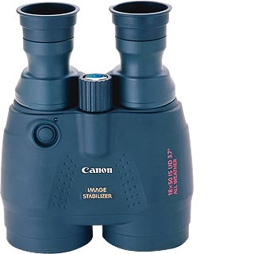
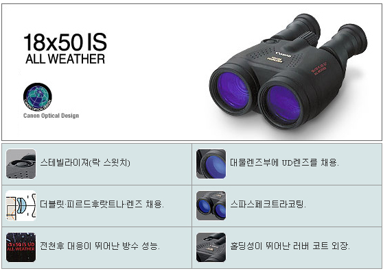

캐논 쌍안경 스테빌라이져, 18X50
제품 소개
케논사의 스테빌라이저는 항공기에 사용하는 자세 조정용 자이로 시스템이 내장된 방진 쌍안경입니다. 일반적으로 12배 이상의 쌍안경은 손의 흔들림으로 관측 대상을 자세하게 보기 어렵습니다. 그러나 스테빌라이저 기능을 탑재한 쌍안경이라면 20배 고배율은 물론 강한 진동을 흡수하기 때문에 흔들림없이 정지된 모습으로 볼 수 있습니다. 쌍안경을 삼각대에 고정시킨 것보다 더 안정적입니다.
일본의 쌍안경 망원경 JTB쇼에 참관했을 때. 관리자는 충격적인 케논 부스를 보았습니다. 케논 부스 중앙에 헬스클럽에서 볼 수 있는 복부 전동밸트를 가져다 놓은 것입니다. 관람자들이 이 전동 밸트를 배에 부착하고 스테빌리아저 쌍안경으로 관망하고 있었습니다. 관리자도 호기심에 한번 사용해 보았는데 정말 정지 그 자체였습니다.
스태빌라이저 쌍안경은 해양의 배와 탐조 및 사파리 차량, 공중의 헬기 등의 격렬하게 흔들리는 장소에서 사용할 수 있습니다. 고배율에서도 안정된 이미지를 얻을 수 있기 때문에 목표물을 정확하게 볼 수 있습니다. 시야의 흔들림이 없이 정지한 상태처럼 목표을 탐색, 추적, 관찰할 수 있습니다. 스테빌라이저를 오랜 시간 동안 계속해 사용할 수 있도록 Lock 장치가 있습니다.
18x50IS의 렌즈는 "스파스페크트라"코팅 처리하여 플레어나 고스트를 거의 완벽하게 제거하였습니다. 시야 주변까지 선명히 하는 "다브렛트피르드후랏트나렌즈"를 사용하여 시야 주변부까지 선명한 상을 제공합니다.
손에 친숙하기 쉬운 인체공학적인 디자인과 홀딩성이 뛰어난 러버 코트 외장으로 실용성을 높였습니다. 버드워칭과 사파리를 사용시 부담이 되지 않도록 저반사로 외관을 처리하였습니다. 또한 비와 습기에 강한 전천후 대응이 뛰어난 방수성을 가지고 있습니다.
18x50IS 스테빌라이저 쌍안경은 절전형으로 상온(25˚C)에서 알칼리 전지 2.5시간, 리튬 전지 8시간, 저온(-10˚C)에서 알칼리 전지 10분, 리튬 전지 3.5시간입니다. 스테빌라저는 버튼 작동시에만 소비전력이 발생하기 때문에 상당 기간 사용할 수 있습니다.
18x50IS는 구경 50mm에 크고, 3군4매(보호유리 포함)에 제3 렌즈에 UD렌즈 1매 사용한 초고급 스테빌라이저입니다. 접안렌즈 구성도 5군7매에 겉보기시야 67˚광시야를 실현하여 눈이 매우 즐겁습니다. 또한 롱 아이릴리프로 안경 착용자도 사용할 수 있습니다. 스테빌라이저 쌍안경 신축식 아이캡을 제공하고 있습니다.
구경 50mm이고 배율이 18배로 높지만 스테빌라이저 쌍안경은 밤하늘의 별들도 흔들림없이 볼 수 있습니다. 높은 배율로 아름다운 산개성단을 보다 확실하게 볼 수 있어 매우 좋습니다. 뿐만 아니라 배율이 높아 탐조시 보다 자세하게 관찰할 수 있습니다.
[제품 사양]
구경 50mm(3군 4매, 보호 유리 포함, 제3 렌즈에 UD렌즈 1매 사용), 배율 18배, 필터경 58mm, 실시야 3.7도, 1000m 시계 65m, 겉보기 시야 67˚광시야, 접안 렌즈 구성 5군 7매, 사출동경 2.8mm, 아이리리프 15mm, 프리즘 형식 폴로 II형 프리즘, 안폭조정 범위 58~76mm, 핀트 조정 방식 대물렌즈 이동 방식 핀트 조절 손잡이의 회전에 의한, 좌우시도차조정 방식 우안측 접안 렌즈의 투입에 의한(±3.0 dpt), 최단합초거리 6m, 손치우침 보정 방식 바리앙르프리즘에 의한 광학 보정 방식, 보정 각도 ±0.7도, 삼각 나사구멍 1/4인치, 전원 단 3형 전지×2개(배터리 팩 BP-B1사용 가능), 사이즈 152(폭)×193(높이)×81(두께)mm, 질량 1180 g(전지별매)
상세 이미지

